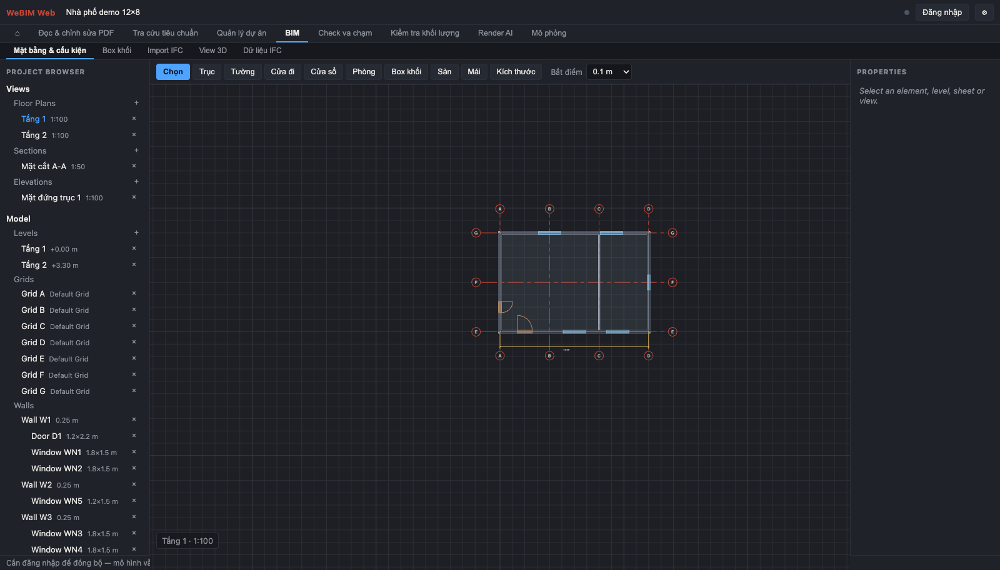

Môi trường dữ liệu chung cho ngành xây dựng Việt Nam
Nền tảng Việt – Công trình Việt – Tầm nhìn Việt.
Chúng tôi kiến tạo một Môi trường Dữ liệu và công cụ duy nhất, nối liền khoảng cách giữa Kiến trúc sư, Kỹ sư và Nhà thầu. Một nền tảng thuần Việt, phụng sự cho khát vọng nâng tầm công trình Việt.

Tám việc, mỗi việc một nhánh
Không phải một rừng tính năng ngang hàng: chọn việc cần làm ở trang chủ, rồi đi theo các bước của đúng việc đó.
Đọc & chỉnh sửa PDF
Mở bản vẽ từ CDE, ghi chú và đánh dấu ngay trên trang — khung, mây sửa đổi, mũi tên, chữ.
Tra cứu tiêu chuẩn
QCVN / TCVN: tình trạng hiệu lực, chuỗi thay thế, và các xung đột giữa quy chuẩn với nhau.
Quản lý dự án
Hồ sơ CDE theo ISO 19650, tiến độ hạng mục, quy trình ISO của công ty, đánh giá nhân sự và hồ sơ công trường — trong cùng một tab.
BIM
Dựng mặt bằng và cấu kiện 3D, dựng box khối cho bước phương án, import IFC, xem 3D.
Check va chạm
Ma trận hệ × hệ, mỗi ô một dung sai riêng, rồi báo cáo va chạm sắp theo độ xuyên sâu.
Kiểm tra khối lượng
Khối lượng tính từ chính hình học đã dựng — lỗ mở đã trừ — rồi áp đơn giá ra ước tính sơ bộ.
Render AI
Dựng ảnh concept từ khối hiện có, bằng model tự host trên máy chủ của bạn.
Mô phỏng
Tiến độ 4D xuất được video, sàng lọc thoát nạn theo QCVN 06, và vi khí hậu vỏ bao che theo 8 hướng.
Ngưỡng lấy từ văn bản, có ghi nguồn
Phần sàng lọc thoát nạn đọc thẳng từ QCVN 06:2022/BXD hợp nhất Sửa đổi 1:2023 (Thông tư 09/2023/TT-BXD, hiệu lực 01/12/2023). Mỗi phát hiện ghi kèm điều hoặc bảng đã dùng, để người đọc tra ngược thay vì phải tin.
| Kiểm tra | Nguồn |
|---|---|
| Hệ số không gian sàn, m²/người | Bảng G.9 |
| Số người: thiết kế được duyệt trước, bảng sau | G.3 |
| Định mức người trên mét lối ra: 165 / 115 / 80 theo bậc chịu lửa | G.2.1.1 |
| Bề rộng tối thiểu 0,8 m — 1,2 m khi trên 50 người | 3.2.9 |
| Phải có hai lối ra: từ 50 người, hoặc quá 25 m | 3.2.5 c), d) |
| Cự ly tới lối ra gần nhất | Bảng G.1 / G.2a |
| Khoảng cách giữa hai lối ra | 3.2.8 |
Đây là sàng lọc sơ bộ, không thay thế hồ sơ thẩm duyệt. Cự ly đo theo đường đi thật trên mặt bằng — vòng qua tường, qua cửa, cộng đoạn hành lang — và vùng bị tường chắn được báo riêng. Màn hình nói rõ cái còn chưa kiểm được: buồng thang bộ và giới hạn chịu lửa của từng cấu kiện.
Chạy trên máy chủ của bạn
Toàn bộ nền tảng gói trong Docker: một lệnh dựng xong Caddy (HTTPS tự cấp), máy chủ đồng bộ, kho file, và Atlas. AI dùng model tự host — không có API đóng nào.
Cộng tác thời gian thực
Nhiều máy cùng sửa một mô hình, đồng bộ tới từng phần tử, có phân quyền admin · editor · viewer.
IFC hai chiều
Xuất IFC từ mô hình native, và link file IFC của bộ môn khác để dò va chạm ở mức hộp bao.
Đẩy sang Atlas
Xuất IFC rồi đăng thẳng vào Models của một dự án Atlas; file đi thẳng lên kho, không qua máy chủ ứng dụng.
Bắt đầu
Không có bước cài đặt. Mở ứng dụng, bấm Nạp dự án demo trong menu ⚙ là có ngay một căn nhà phố 12×8 đầy đủ trục, tường, cửa, sàn, sheet, bảng thống kê, hồ sơ CDE và kế hoạch.